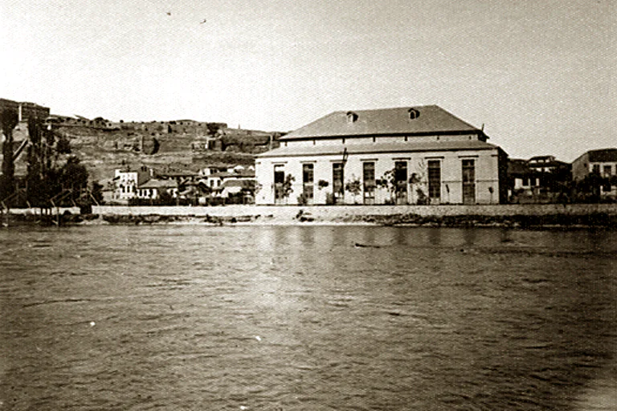
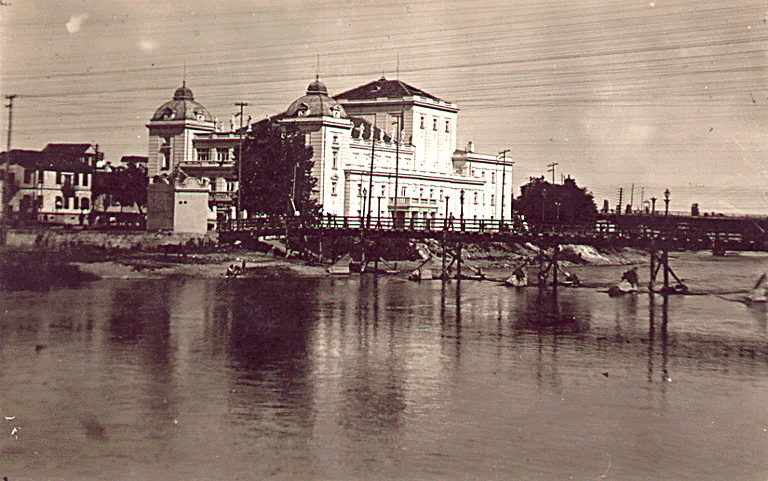
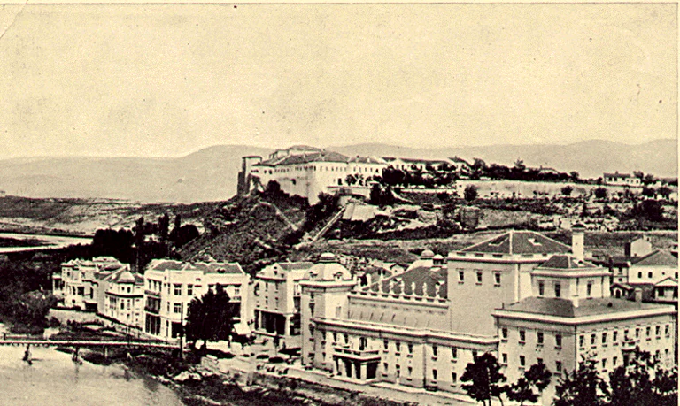
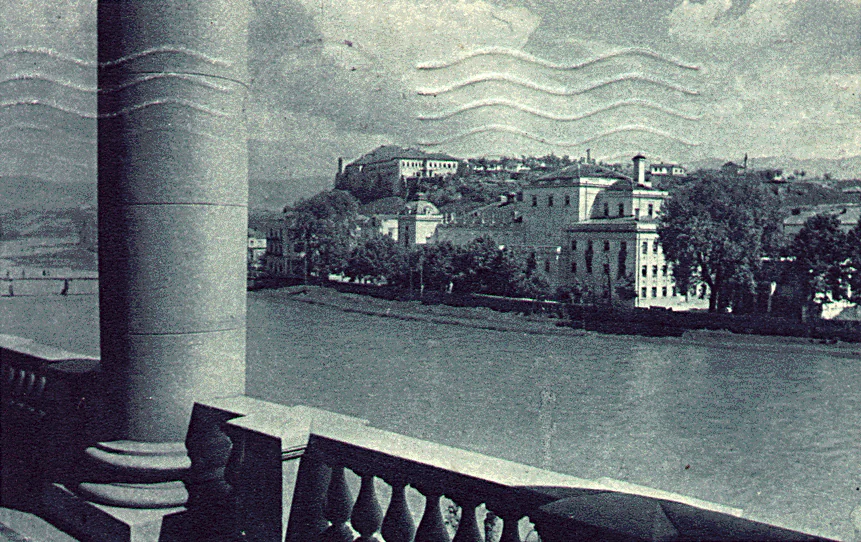
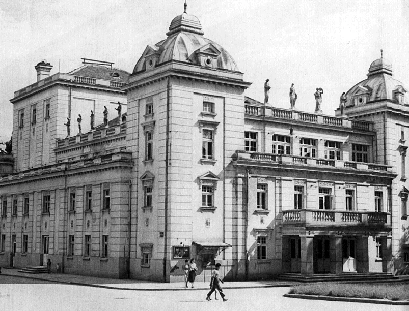
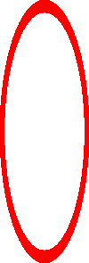

Opis
Stara kavarna „Boges“, v kateri so do začetka 20. stoletja potekale prve gledališke predstave. Leta 1902 se gradi prvo gledališče.

Turško gledališče, zgrajeno leta 1902. - začetek 20. stoletja.

Turško gledališče z delom judovske četrti in skopsko trdnjavo - Kale. (začetek 20. stoletja)

Glavni vhod Narodnega gledališča. - 1930-a leta. Slovesno odprtje je bilo 26. oktobra 1927. Arhitekti: J. Bukovac, E. Brandstein, S. Beljajevski, D. M. Leko, Petar Gočić in V. Mesner.

Glavni vhod Narodnega gledališča. - 1930-a leta

Narodno gledališče s skopsko trdnjavo - Kale. (1930-a leta)

Narodno gledališče. (1930-a leta)

Narodno gledališče - ponoči. (1930-a leta)

Pogled proti Narodnemu gledališču in lesenemu mostičku. (1930-a leta)

Narodno gledališče. (1930-a leta)

Pogled na Narodno gledališče z lesenega mostička. (1930-a leta)

Leseni mostiček in Narodno gledališče - 1930-a leta.

Leseni mostiček in Narodno gledališče - 1930-a leta.

Narodno gledališče in leseni most - 1930-a leta.

Narodno gledališče - 1930-a leta.

Pogled z desnega brega Vardarja proti Narodnemu gledališču in skopski trdnjavi - Kale - 1930-a leta.

Pogled z vzhodne strani Narodnega gledališča. V ozadju so masivi Šar planine - 1930-a leta.

Narodno gledališče in skopska trdnjava - Kale - 1930-a leta.

Fotografija z Oficirskega doma - okoli 1930. Čudovit posnetek Narodnega gledališča, lesenega mostička in skopske trdnjave - Kale.

Narodno gledališče s skopsko trdnjavo - Kale - 1930-a leta.

Narodno gledališče, del lesenega mostička in del novozgrajenih hiš. V zgornjem delu se vidi skopska trdnjava - Kale - 1930-a leta.

Narodno gledališče in skupina modernih hiš ter hiš judovske četrti. Desno se vidi del ekstravagantnih hiš judovske četrti. Nad gledališčem se vidi skopska trdnjava - Kale - 1930-a leta.

Narodno gledališče in judovska četrt, nad njima pa se dviga skopska trdnjava - Kale - 1930-a leta.

Panoramski pogled na Narodno gledališče, nad katerim se dviga Kale z vojašnicami - 1930-a leta.

Pogled na Narodno gledališče s terase Oficirskega doma - 1930-a leta.

Pogled na Narodno gledališče s terase Oficirskega doma - 1930-a leta.

Panoramski pogled na Narodno gledališče, nad katerim se dviga Kale - 1950-a leta.

Narodno gledališče - 1950-a leta.
Orientacija



Na starem orientacijskem zemljevidu
Fotoalbum


Tema
 Akvadukt4 razglednice
Akvadukt4 razglednice Kale30 razglednic
Kale30 razglednic Mostovi60 razglednic
Mostovi60 razglednic Nabrežje58 razglednic
Nabrežje58 razglednic Trg46 razglednic
Trg46 razglednic Stavbe66 razglednic
Stavbe66 razglednic Krščanski templji19 razglednic
Krščanski templji19 razglednic Muslimanske stavbe33 razglednic
Muslimanske stavbe33 razglednic Oficirski dom29 razglednic
Oficirski dom29 razglednic Gledališče28 razglednic
Gledališče28 razglednic Železniška postaja13 razglednic
Železniška postaja13 razglednic Šole36 razglednic
Šole36 razglednic Parki12 razglednic
Parki12 razglednic Tržnice18 razglednic
Tržnice18 razglednic Ulice38 razglednic
Ulice38 razglednic Panorama I60 razglednic
Panorama I60 razglednic Panorama II30 razglednic
Panorama II30 razglednic Kolaži55 razglednic
Kolaži55 razglednic Poplave9 razglednic
Poplave9 razglednic Potres27 razglednic
Potres27 razglednic Skopje 200026 razglednic
Skopje 200026 razglednic